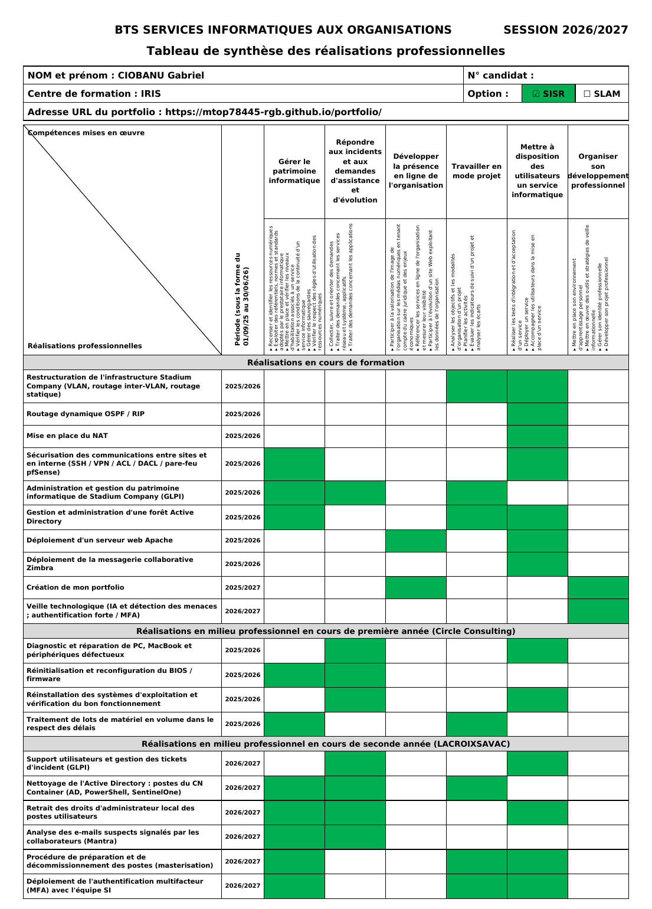

L'épreuve E5 évalue ma capacité à répondre aux besoins d'une organisation en concevant, déployant et maintenant des solutions d'infrastructure réseau et système.
Elle se déroule à l'oral : une présentation de 10 minutes, puis 40 minutes d'échange avec le jury, à partir des réalisations de mon Tableau de Synthèse.
Aperçu de mon Tableau de Synthèse

Télécharger mon Tableau de Synthèse (PDF)